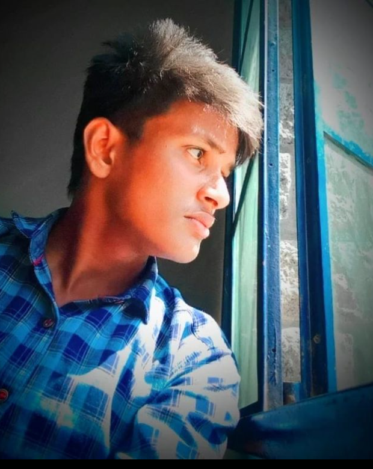

ABOUT MYSELF:
Vishnu.V

am a student who lives in palani city with my family.
All my friends are from the city too.
I did my schooling in Vivekanandha Vidhyalaya Matric. Higher Secondary School.
Now I’m doing my bachelor’s degree in SNMV College of arts and science.
Hobbies: Each person has different hobbies, and doing different things gives them joy.
my hobbies is playing footbal and drawing
Dreams and aspirations: While many people have dreams of becoming doctors and lawyers,
I want to become a FULL STACK DEVELOPER
MOTHER
MANJULA.V

She will wake up in the earley morning and prepare food for me before I
getting redy for college.
She gave many ideas whenever I got confused
Mother is a significant member of every family.
She is the female parent of a child who nurtures her baby and protects him/her from the
evil gaze of society.
She is an integral person in the life of every child and takes care of the entire family
with utmost love, care and affection.
FATHER
Vijayakumar.K

He is the one who takes care of the entire family including his own
parents, wife and children.
He earns his bread and butter for his family and tries his best to fulfil their needs and
demands.
A father is one who maintains strict discipline among the family members and is looked
upon with respect by everyone.
SISITER
Nadhiya.V
I have a younger sister who is three years younger than me.
She is my whole world and I cannot live without her.
I remember playing with her all day when she was an infant.
the age gap between us started to lessen and she turned into a friend of mine.
I can share all my secrets with my younger sister.
Even though she is younger than me, she does not act like it.
She is a very matured girl who handles all my moods and whims accordingly.
she also makes everyone in our family laughs with her cute little antics.
Everyone in my family adores her as she is the youngest member of our family.